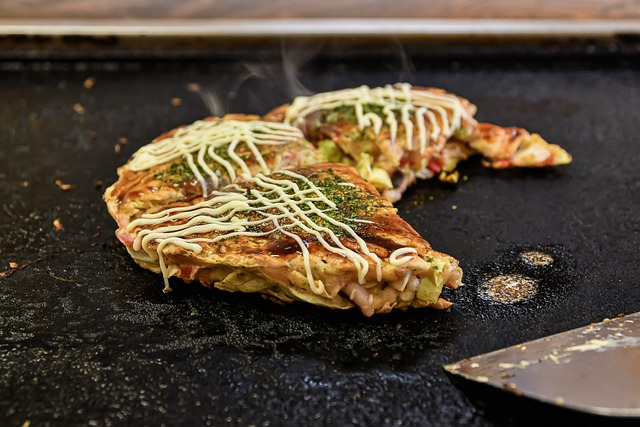

Okonomiyaki

Description
Originating from the Japanese cuisine, the okonomiyaki is generally described as a savory pancake. It consists of wheat flour and cabbage
alongside other accoutrements such as beef or seafood. You might say that having a pancake without syrup, fruit, chocolate chips, or any other
decadent topping is sacrilege but the okonomiyaki will not disappoint.
Ingredients
- Egg Whites
- Tempura Crumbs (Made of water, flour, and eggs) or Panko
- Worcestershire Sauce
- Pickled Ginger
- Shredded Cabbage
- Olive Oil
Steps
- Mix cabbage, panko, and eggs in a bowl.
- Heat olive oil in skillet, then add mixture from step 1.
- Remove okonomiyaki from skillet when its browned on both sides.
- Drizzle with toppings, and they are ready to eat!
Home